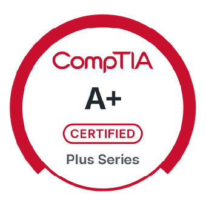
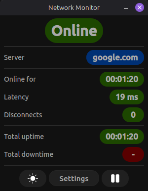
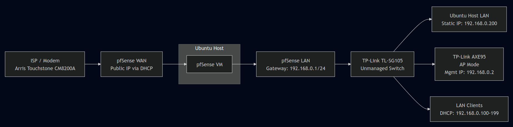

Overview
Computer Science student who enjoys learning about technology by building, troubleshooting, and exploring how systems and networks work.
A short overview of my background, interests, and goals in IT.
Computer Science student who enjoys learning about technology by building, troubleshooting, and exploring how systems and networks work.
Based in Virginia Beach, Virginia. Willing to relocate for career opportunities and new experiences.
Working toward a career in IT by building real-world experience in networking, homelabs, and practical technical problem solving.
In my free time, I enjoy playing games like Street Fighter 6, watching movies, lifting weights, and keeping up with new technology.
Technical skills I've developed through labs, personal projects, and continuous learning.
List of active IT certifications that I've earned.

Hands-on personal projects focused on IT infrastructure, networking, troubleshooting, and documentation.

PySide6 desktop application for monitoring reachability, latency, and connection status with configurable targets, themed UI, and persistent settings.

Ongoing homelab environment intended for hands-on practice with virtualization, networking, system administration, and many enterprise-style lab services.
Smaller projects, technical builds, and documentation completed in my homelab.
Configured Active Directory services on Windows Server 2025 VM as part of an isolated entterprise lab environment.
A clean Windows Server 2025 virtual machine deployment used as a foundation for server administration and enterprise lab testing.
Deployed pfSense in a virtual machine and configured it as a practical firewall and router lab that mirrors a real-world network setup.
Created and applied Group Policy Objects in an Active Directory lab, linked them to Organizational Units, and verified policy behavior on a domain-joined Windows client.
Deployed an Ubuntu virtual machine for isolated Linux testing, documentation, and client-side homelab scenarios.
Deployed a Windows 11 virtual machine for domain testing, documentation, and client-side homelab scenarios.